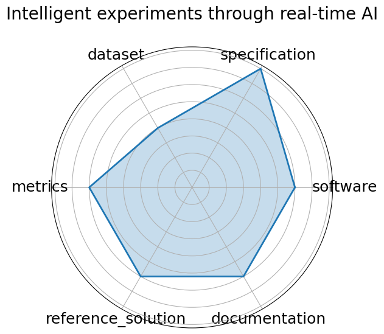

Edit: edit this entry
Date: 2025-01-08
Name: Intelligent experiments through real-time AI
Domain: Instrumentation and Detectors; Nuclear Physics; Particle Physics
Focus: Real-time FPGA-based triggering and detector control for sPHENIX and future EIC
Keywords: FPGA, Graph Neural Network, hls4ml, real-time inference, detector control
Task Types: Trigger classification, Detector control, Real-time inference
Metrics: Accuracy charm and beauty detection , Latency micros , Resource utilization LUT/FF/BRAM/DSP
Models: Bipartite Graph Network with Set Transformers BGN-ST , GarNet edge-classifier
Citation:
J. Kvapil, G. Borca-Tasciuc, H. Bossi, K. Chen, Y. Chen, Y. Corrales Morales, H. Da Costa, C. Da Silva, C. Dean, J. Durham, S. Fu, C. Hao, P. Harris, O. Hen, H. Jheng, Y. Lee, P. Li, X. Li, Y. Lin, M. X. Liu, V. Loncar, J. P. Mitrevski, A. Olvera, M. L. Purschke, J. S. Renck, G. Roland, J. Schambach, Z. Shi, N. Tran, N. Wuerfel, B. Xu, D. Yu, and H. Zhang. Intelligent experiments through real-time ai: fast data processing and autonomous detector control for sphenix and future eic detectors. 2025. URL: https://arxiv.org/abs/2501.04845, arXiv:2501.04845.
bibtex: ``` @misc{kvapil2025intelligentexperimentsrealtimeai,
archiveprefix={arXiv},
author={J. Kvapil and G. Borca-Tasciuc and H. Bossi and K. Chen and Y. Chen and Y. Corrales Morales and H. Da Costa and C. Da Silva and C. Dean and J. Durham and S. Fu and C. Hao and P. Harris and O. Hen and H. Jheng and Y. Lee and P. Li and X. Li and Y. Lin and M. X. Liu and V. Loncar and J. P. Mitrevski and A. Olvera and M. L. Purschke and J. S. Renck and G. Roland and J. Schambach and Z. Shi and N. Tran and N. Wuerfel and B. Xu and D. Yu and H. Zhang},
eprint={2501.04845},
primaryclass={physics.ins-det},
title={Intelligent experiments through real-time AI: Fast Data Processing and Autonomous Detector Control for sPHENIX and future EIC detectors},
url={https://arxiv.org/abs/2501.04845},
year={2025}}
```
Ratings:
Software:
Rating: 3
Reason: No containerized or open-source setup provided
Specification:
Rating: 4
Reason: Architectural/system specifications are incomplete
Dataset:
Rating: 2
Reason: Dataset is internal and not publicly available or FAIR-compliant
Metrics:
Rating: 3
Reason: Metrics relevant but not supported by evaluation scripts or baselines
Reference Solution:
Rating: 3
Reason: No public or reproducible implementation released
Documentation:
Rating: 3
Reason: No public GitHub or complete pipeline documentation
Average Rating: 3.0
Radar Plot: 